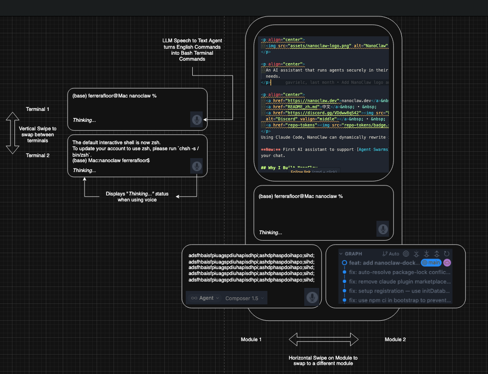
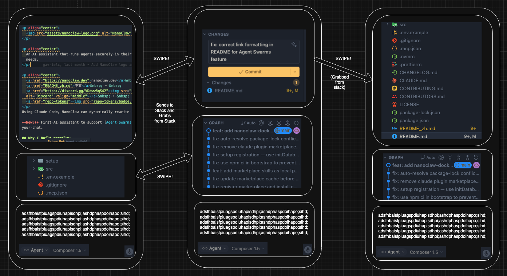
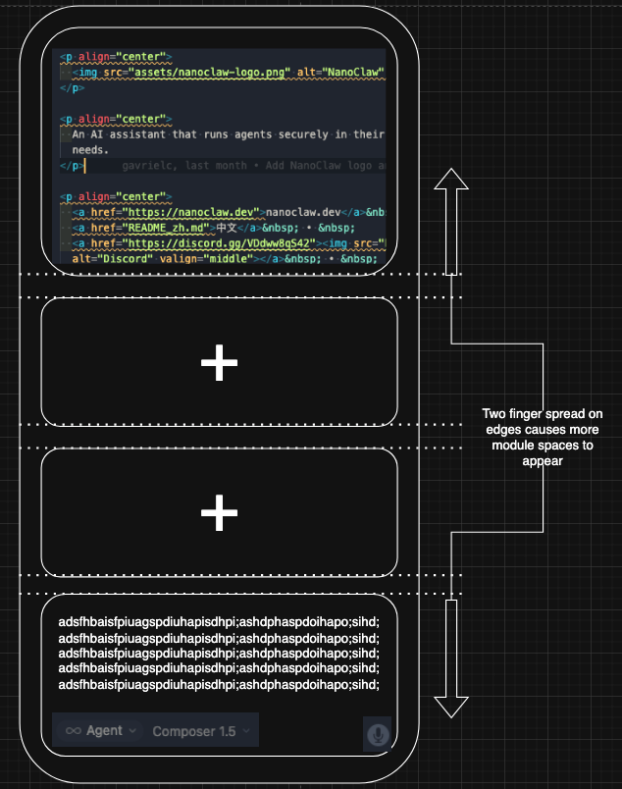
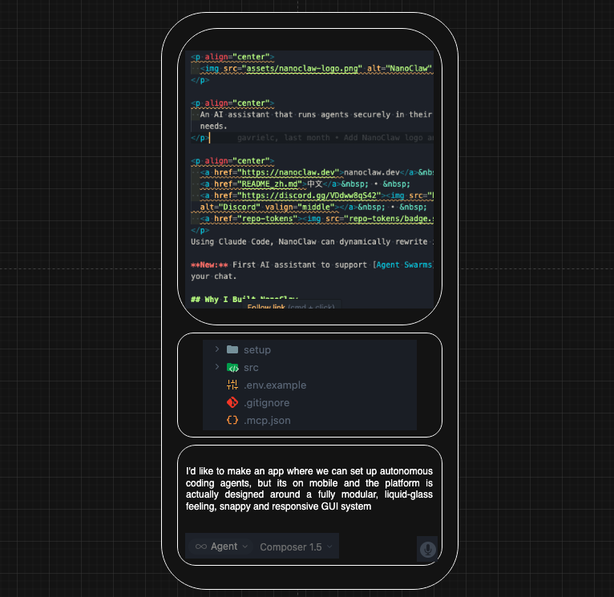
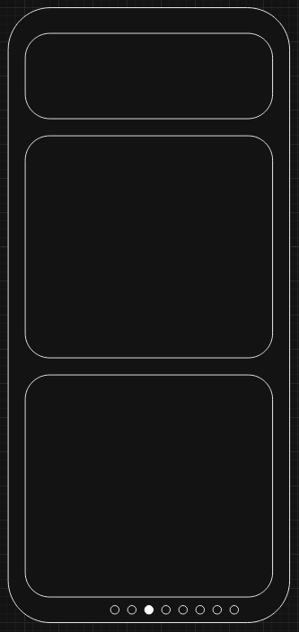

Horizontal drag
Swipe a lane to the next container on the ring — files, editor, graph, terminal.
Native · iOS & Android
The coding IDE built for a phone — not shrunk from a desktop.
A gesture shell where the whole development environment lives:
swipe editors, pinch workspaces, run real node and git
against your GitHub repos.
Drag the flock · images cycle on their own
The shell owns navigation. Content owns reading and typing. Conflict is settled once, everywhere.
Swipe a lane to the next container on the ring — files, editor, graph, terminal.
Drag from the screen edge to travel between rings, or mint a fresh one.
Two fingers open a lane or close one. Pinch the last lane and the ring folds.
Pull the capsule between lanes to resize. Springs settle with mass.
Trees scroll, editors edit, terminals take keystrokes. Vertical stays with content.
While the editor is focused, every drag on it belongs to the text — selection and caret first.
The gesture law. One-finger horizontal drags and all two-finger gestures belong to the shell, everywhere. Content gets taps, vertical scrolling, and the keyboard.
The screen is a window onto a ring. Lanes show what is open; the rest wait in reserve.


Dots mark rings. Edge-swipe travels; a fresh ring is born at the end.

Edit the file itself in the lane. Floating keyboard. Autosave.

Swipe from the editor into the commit surface, then the history rails.

Two-finger spread opens a blank lane. Pinch closes it again.
Black containers on a white canvas. IBM Plex Mono. Motion is the arrow — no coach marks.
Editor, commit, graph — consecutive containers on one ring.

Branch rails, merges, tips — drawn like a desktop client, scrolled with a thumb.

Continuous 32pt radii. The container is the chrome.
Spread opens space. Pinch collapses it. The last pinch closes the ring.
No server in the middle. GitHub talks to the phone. The engines are native.
A from-scratch POSIX-flavored shell: pipes, redirects, functions, $(…), globs, scripts — verified against real /bin/sh.
JavaScriptCore Node layer: npm install, CommonJS + ESM, TypeScript, sockets, HTTP, workers, and full-screen TUIs.
Native object store, packfiles, smart-HTTP fetch/push, and three-way merge — interoperable with the real CLI.
Sign in once. The workspace is the project.
OAuth Device Flow. Tokens in the Keychain. The GitHub container is the same session everywhere.
Clone via tarball or start a local project. One workspace per repo, shared across rings.
Tap the file. Type. Autosave. Shared buffers mean two rings on one file stay live.
The graph toolbar drives the native engine. Sync pushes; pull is an explicit terminal command.
What Mouse is, and what it is not.
A native mobile IDE for iOS and Android. The development environment lives in a gesture-driven shell: rings of containers for files, editor, commit graph, and terminal.
No. Two native apps — SwiftUI on iOS/iPadOS, Jetpack Compose on Android. No Capacitor, React Native, or Flutter bridge.
Yes. A Node-compatible runtime on JavaScriptCore, with npm from the real registry, sockets, HTTP, and packages like vite, webpack, jest, and express verified against real node.
Mouse ships a from-scratch engine: loose objects, packfiles, refs, merge, and GitHub smart-HTTP. Repositories it writes pass git fsck.
The source is on GitHub today. Build the iOS app with Xcode + xcodegen, or the Android app with Gradle. Release packaging is tracked in the repo.
Product branches on the roadmap cover AI pair editing and background agents as containers. The shell’s multi-view model is the substrate; those slices land when feel-tested.
Clone the repo. Generate the Xcode project. Run.